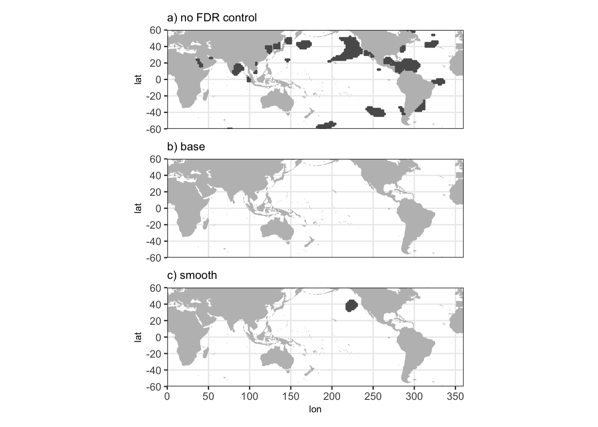

library(data.table)
# Plotting libraries
library(maps)
library(patchwork) # stacking ggplots
library(ggplot2)Example Notebook
This code demonstrates how to apply the method, using the July sea surface temperatures (SST) covariates and Central US temperatures application from the paper. In this application, we regress a time series of mean 2m air temperatures over the Central US against the SST covariates, looking for potential associations.
In order to apply the smoothing method, we need to fit the MLEs of the spatial model parameters to the SST data. This can be done by running example_mle_fit_script.R.
The functions are written using the future package to enable easy parallelization. If parallelization is not an option due to memory or core constraints use plan(sequential) to run the script on a single core. If using plan(multicore) make sure to run the script from the terminal using Rscript.
plan(multicore) can be used to speed up the process if there are available cores and memory. See scripts/application/sst_mle_fit_parallel.R for an example. Note that plan(multicore) should not be run from within Rstudio, use Rscript with a .R script file instead.
source("code/functions/process_data.R")
source("code/functions/dist_cov.R")
source("code/functions/cov_smooth.R")
source("code/functions/blockwise_MLE.R")
source("code/functions/inference.R")data_path <- "data/"
save_path <- "data/"
sst_filepath <- paste0(data_path, "sst_detrend_anom_jul.csv")
mle_filepath <- paste0(data_path, "sst_jul_mle_fit.csv")
t2m_path <- paste0(data_path, "t2m_GP_mean_jul.csv")
# Load the 2m air temperatures. These are the response variable of interest.
t2m_GP <- fread(t2m_path)
t2m_lm <- lm(t2m ~ time, data = t2m_GP)
t2m_anom <- t2m_lm$residuals
# Load the detrended July SST anomalies.
# Only gridboxes with fewer than 25% of values being identical are kept.
# This arises at locations that are frozen over for a portion of the
# year.
sst_anoms <- load_obs_data(path = sst_filepath,
max_const_prop = 0.25)
sst_coord_dt <- extract_coord_dt(sst_anoms)
# standardize the anomalies and turn them into a data matrix
sst_mat_std <- extract_data_matrix(sst_anoms, "sst_anoms", scale = TRUE)
# calculates signed Zonal (East-West) and Meridional (North-South) distances
# For use in calculating the weights from the spatial model.
sst_zonal_sdist <- find_signed_zonal_dist(sst_coord_dt)
sst_merid_sdist <- find_signed_merid_dist(sst_coord_dt)
loc_list <- get_loc_list(sst_coord_dt)Once the MLEs are fit we can load in the MLE values of the parameters, and use those to generate the smoothing weights, smooth the data, perform the standard regression tests, and use Benjamini-Hochberg to find rejections.
sst_jul_mle <- fread(mle_filepath)
mle_mat <- data.matrix(sst_jul_mle[, 1:3])
smoothing_weights <- find_smooth_weights(loc_list,
zonal_sdist = sst_zonal_sdist,
merid_sdist = sst_merid_sdist,
cov_func = matern_1.5_cov,
mle_params = mle_mat,
progress = FALSE)
sst_jul_mat_smooth <- sst_mat_std %*% smoothing_weights
smooth_lm_fits <- fast_fit_lm_tstat(t2m_anom, sst_jul_mat_smooth)
n <- nrow(sst_jul_mat_smooth)
smooth_pvals <- 2 * pt(abs(smooth_lm_fits), df = n - 2, lower.tail = FALSE)
smooth_reject <- find_BH_reject(smooth_pvals, alpha = 0.1)For comparison, we can also run Benjamini-Hochberg with the un-smoothed covariates, and a regression analysis with no correction for multiple testing.
base_lm_fits <- fast_fit_lm_tstat(t2m_anom, sst_mat_std)
base_pvals <- 2 * pt(abs(base_lm_fits), df = n - 2, lower.tail = FALSE)
base_reject <- find_BH_reject(base_pvals, alpha = 0.1)
base_reject$method <- "base"
smooth_reject$method <- "smooth"
reject_df <- rbind(base_reject, smooth_reject)
names(reject_df)[3] <- "reject"
no_BH <- data.table(location = 1:8195,
p_val = base_pvals,
reject = base_pvals < 0.05,
method = "no BH")
reject_df <- rbind(reject_df, no_BH)
fwrite(reject_df, file = paste0(save_path, "t2m_sst_rejections_jul.csv"))Finally, we plot the results to compare the rejections under the three different methods.
land_map <- sf::st_as_sf(map(wrap = c(0, 360), plot = FALSE, fill = TRUE))
t2m_rejections <- fread(paste0(data_path, 't2m_sst_rejections_jul.csv'))
t2m_rejections$method <- factor(t2m_rejections$method,
levels = c('no BH', 'base', 'smooth'),
labels = c('no FDR control', 'base', 'smooth'))
t2m_rejections <- t2m_rejections[sst_coord_dt, on = "location"]
no_fdr_rejections <- t2m_rejections[method == 'no FDR control']
base_rejections <- t2m_rejections[method == 'base']
smooth_rejections <- t2m_rejections[method == 'smooth']
no_fdr_plot <- ggplot(data = land_map) +
geom_sf(fill = "gray",
color = "gray",
inherit.aes = FALSE) +
geom_point(data = no_fdr_rejections[reject == TRUE],
size = 0.4,
color = '#5A5A5A',
aes(x = lon, y = lat)) +
coord_sf(xlim = c(0, 360),
ylim = c(-60, 60),
expand = FALSE) +
scale_x_continuous(breaks = seq(0, 360, by = 50),
labels = \(x) as.character(x)) +
scale_y_continuous(breaks = seq(-60, 60, by = 20),
labels = \(x) as.character(x)) +
guides(color = guide_legend(override.aes = list(size = 2))) +
theme_bw() +
labs(title = 'a) no FDR control') +
theme(axis.text.x = element_blank(),
axis.title.x = element_blank(),
axis.ticks.x = element_blank(),
title = element_text(size = 8))
base_plot <- ggplot(data = land_map) +
geom_sf(fill = "gray",
color = "gray",
inherit.aes = FALSE) +
geom_point(data = base_rejections[reject == TRUE],
size = 0.4,
color = '#5A5A5A',
aes(x = lon, y = lat)) +
coord_sf(xlim = c(0, 360),
ylim = c(-60, 60),
expand = FALSE) +
scale_x_continuous(breaks = seq(0, 360, by = 50),
labels = \(x) as.character(x)) +
scale_y_continuous(breaks = seq(-60, 60, by = 20),
labels = \(x) as.character(x)) +
guides(color = guide_legend(override.aes = list(size = 2))) +
theme_bw() +
labs(title = 'b) base') +
theme(axis.text.x = element_blank(),
axis.title.x = element_blank(),
axis.ticks.x = element_blank(),
title = element_text(size = 8))
smooth_plot <- ggplot(data = land_map) +
geom_sf(fill = "gray",
color = "gray",
inherit.aes = FALSE) +
geom_point(data = smooth_rejections[reject == TRUE],
size = 0.4,
color = '#5A5A5A',
aes(x = lon, y = lat)) +
coord_sf(xlim = c(0, 360),
ylim = c(-60, 60),
expand = FALSE) +
scale_x_continuous(breaks = seq(0, 360, by = 50),
labels = \(x) as.character(x)) +
scale_y_continuous(breaks = seq(-60, 60, by = 20),
labels = \(x) as.character(x)) +
guides(color = guide_legend(override.aes = list(size = 2))) +
labs(title='c) smooth') +
theme_bw() +
theme(title = element_text(size = 8))
patchwork_stacked_plot <- (no_fdr_plot / base_plot / smooth_plot)
patchwork_stacked_plot
The method with no multiple testing correction shows many spurious rejections, while Benjamini-Hochberg without smoothing shows no rejections. The combination of our smoothing method with Benjamini-Hochberg produces a small core of rejections in the Pacific Ocean off the west coast of the US.